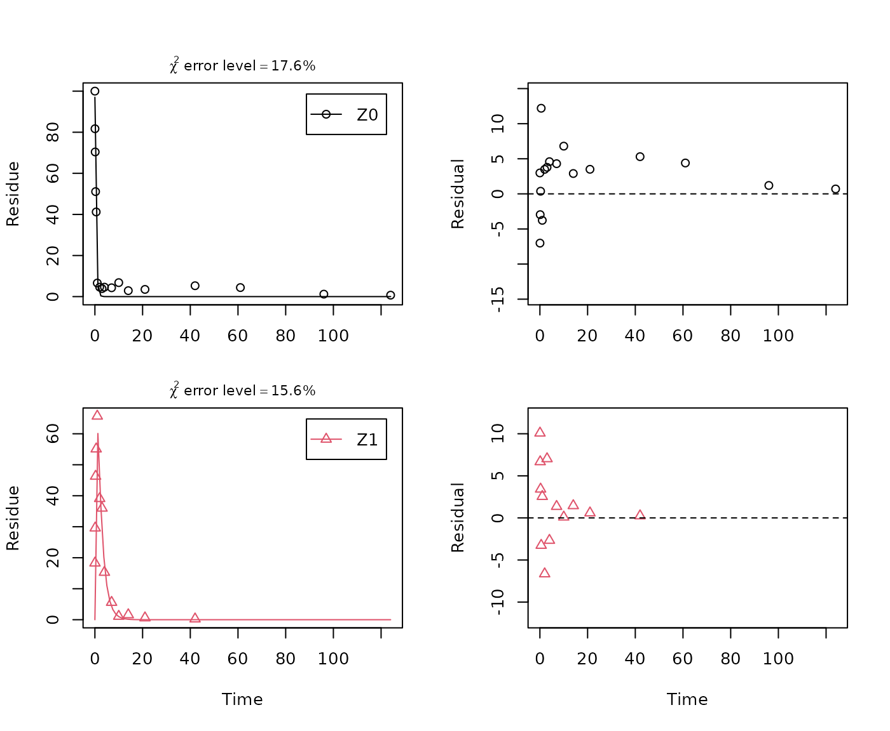

Example evaluation of FOCUS dataset Z
Johannes Ranke
2020-11-30
Source:vignettes/web_only/FOCUS_Z.rmd
FOCUS_Z.rmdWissenschaftlicher Berater, Kronacher Str. 12, 79639 Grenzach-Wyhlen, Germany
Privatdozent at the University of Bremen
The data
The following code defines the example dataset from Appendix 7 to the FOCUS kinetics report (FOCUS Work Group on Degradation Kinetics 2014, 354).
library(mkin, quietly = TRUE)
LOD = 0.5
FOCUS_2006_Z = data.frame(
t = c(0, 0.04, 0.125, 0.29, 0.54, 1, 2, 3, 4, 7, 10, 14, 21,
42, 61, 96, 124),
Z0 = c(100, 81.7, 70.4, 51.1, 41.2, 6.6, 4.6, 3.9, 4.6, 4.3, 6.8,
2.9, 3.5, 5.3, 4.4, 1.2, 0.7),
Z1 = c(0, 18.3, 29.6, 46.3, 55.1, 65.7, 39.1, 36, 15.3, 5.6, 1.1,
1.6, 0.6, 0.5 * LOD, NA, NA, NA),
Z2 = c(0, NA, 0.5 * LOD, 2.6, 3.8, 15.3, 37.2, 31.7, 35.6, 14.5,
0.8, 2.1, 1.9, 0.5 * LOD, NA, NA, NA),
Z3 = c(0, NA, NA, NA, NA, 0.5 * LOD, 9.2, 13.1, 22.3, 28.4, 32.5,
25.2, 17.2, 4.8, 4.5, 2.8, 4.4))
FOCUS_2006_Z_mkin <- mkin_wide_to_long(FOCUS_2006_Z)Parent and one metabolite
The next step is to set up the models used for the kinetic analysis. As the simultaneous fit of parent and the first metabolite is usually straightforward, Step 1 (SFO for parent only) is skipped here. We start with the model 2a, with formation and decline of metabolite Z1 and the pathway from parent directly to sink included (default in mkin).
## Temporary DLL for differentials generated and loaded
m.Z.2a <- mkinfit(Z.2a, FOCUS_2006_Z_mkin, quiet = TRUE)## Warning in mkinfit(Z.2a, FOCUS_2006_Z_mkin, quiet = TRUE): Observations with
## value of zero were removed from the data
plot_sep(m.Z.2a)
summary(m.Z.2a, data = FALSE)$bpar## Estimate se_notrans t value Pr(>t) Lower Upper
## Z0_0 97.01488 3.301084 29.3888 3.2971e-21 91.66556 102.3642
## k_Z0 2.23601 0.207078 10.7979 3.3309e-11 1.95303 2.5600
## k_Z1 0.48212 0.063265 7.6207 2.8154e-08 0.40341 0.5762
## f_Z0_to_Z1 1.00000 0.094764 10.5525 5.3560e-11 0.00000 1.0000
## sigma 4.80411 0.635638 7.5579 3.2592e-08 3.52677 6.0815As obvious from the parameter summary (the component of the summary), the kinetic rate constant from parent compound Z to sink is very small and the t-test for this parameter suggests that it is not significantly different from zero. This suggests, in agreement with the analysis in the FOCUS kinetics report, to simplify the model by removing the pathway to sink.
A similar result can be obtained when formation fractions are used in the model formulation:
## Temporary DLL for differentials generated and loaded
m.Z.2a.ff <- mkinfit(Z.2a.ff, FOCUS_2006_Z_mkin, quiet = TRUE)## Warning in mkinfit(Z.2a.ff, FOCUS_2006_Z_mkin, quiet = TRUE): Observations with
## value of zero were removed from the data
plot_sep(m.Z.2a.ff)
summary(m.Z.2a.ff, data = FALSE)$bpar## Estimate se_notrans t value Pr(>t) Lower Upper
## Z0_0 97.01488 3.301084 29.3888 3.2971e-21 91.66556 102.3642
## k_Z0 2.23601 0.207078 10.7979 3.3309e-11 1.95303 2.5600
## k_Z1 0.48212 0.063265 7.6207 2.8154e-08 0.40341 0.5762
## f_Z0_to_Z1 1.00000 0.094764 10.5525 5.3560e-11 0.00000 1.0000
## sigma 4.80411 0.635638 7.5579 3.2592e-08 3.52677 6.0815Here, the ilr transformed formation fraction fitted in the model takes a very large value, and the backtransformed formation fraction from parent Z to Z1 is practically unity. Here, the covariance matrix used for the calculation of confidence intervals is not returned as the model is overparameterised.
A simplified model is obtained by removing the pathway to the sink.
In the following, we use the parameterisation with formation fractions in order to be able to compare with the results in the FOCUS guidance, and as it makes it easier to use parameters obtained in a previous fit when adding a further metabolite.
## Temporary DLL for differentials generated and loaded
m.Z.3 <- mkinfit(Z.3, FOCUS_2006_Z_mkin, quiet = TRUE)## Warning in mkinfit(Z.3, FOCUS_2006_Z_mkin, quiet = TRUE): Observations with
## value of zero were removed from the data
plot_sep(m.Z.3)
summary(m.Z.3, data = FALSE)$bpar## Estimate se_notrans t value Pr(>t) Lower Upper
## Z0_0 97.01488 2.597342 37.352 2.0106e-24 91.67597 102.3538
## k_Z0 2.23601 0.146904 15.221 9.1477e-15 1.95354 2.5593
## k_Z1 0.48212 0.041727 11.554 4.8268e-12 0.40355 0.5760
## sigma 4.80411 0.620208 7.746 1.6110e-08 3.52925 6.0790As there is only one transformation product for Z0 and no pathway to sink, the formation fraction is internally fixed to unity.
Metabolites Z2 and Z3
As suggested in the FOCUS report, the pathway to sink was removed for metabolite Z1 as well in the next step. While this step appears questionable on the basis of the above results, it is followed here for the purpose of comparison. Also, in the FOCUS report, it is assumed that there is additional empirical evidence that Z1 quickly and exclusively hydrolyses to Z2.
Z.5 <- mkinmod(Z0 = mkinsub("SFO", "Z1", sink = FALSE),
Z1 = mkinsub("SFO", "Z2", sink = FALSE),
Z2 = mkinsub("SFO"), use_of_ff = "max")## Temporary DLL for differentials generated and loaded
m.Z.5 <- mkinfit(Z.5, FOCUS_2006_Z_mkin, quiet = TRUE)## Warning in mkinfit(Z.5, FOCUS_2006_Z_mkin, quiet = TRUE): Observations with
## value of zero were removed from the data
plot_sep(m.Z.5)
Finally, metabolite Z3 is added to the model. We use the optimised differential equation parameter values from the previous fit in order to accelerate the optimization.
Z.FOCUS <- mkinmod(Z0 = mkinsub("SFO", "Z1", sink = FALSE),
Z1 = mkinsub("SFO", "Z2", sink = FALSE),
Z2 = mkinsub("SFO", "Z3"),
Z3 = mkinsub("SFO"),
use_of_ff = "max")## Temporary DLL for differentials generated and loaded
m.Z.FOCUS <- mkinfit(Z.FOCUS, FOCUS_2006_Z_mkin,
parms.ini = m.Z.5$bparms.ode,
quiet = TRUE)## Warning in mkinfit(Z.FOCUS, FOCUS_2006_Z_mkin, parms.ini = m.Z.5$bparms.ode, :
## Observations with value of zero were removed from the data## Warning in mkinfit(Z.FOCUS, FOCUS_2006_Z_mkin, parms.ini = m.Z.5$bparms.ode, : Optimisation did not converge:
## false convergence (8)
plot_sep(m.Z.FOCUS)
summary(m.Z.FOCUS, data = FALSE)$bpar## Estimate se_notrans t value Pr(>t) Lower Upper
## Z0_0 96.839001 1.994273 48.5585 4.0276e-42 92.827060 100.850943
## k_Z0 2.215367 0.118456 18.7021 1.0410e-23 1.989432 2.466960
## k_Z1 0.478310 0.028258 16.9265 6.2430e-22 0.424712 0.538673
## k_Z2 0.451628 0.042139 10.7176 1.6313e-14 0.374337 0.544877
## k_Z3 0.058692 0.015245 3.8498 1.7806e-04 0.034806 0.098972
## f_Z2_to_Z3 0.471498 0.058350 8.0805 9.6614e-11 0.357741 0.588294
## sigma 3.984431 0.383402 10.3923 4.5575e-14 3.213126 4.755736
endpoints(m.Z.FOCUS)## $ff
## Z2_Z3 Z2_sink
## 0.4715 0.5285
##
## $distimes
## DT50 DT90
## Z0 0.31288 1.0394
## Z1 1.44916 4.8140
## Z2 1.53478 5.0984
## Z3 11.80983 39.2314This fit corresponds to the final result chosen in Appendix 7 of the FOCUS report. Confidence intervals returned by mkin are based on internally transformed parameters, however.
Using the SFORB model
As the FOCUS report states, there is a certain tailing of the time course of metabolite Z3. Also, the time course of the parent compound is not fitted very well using the SFO model, as residues at a certain low level remain.
Therefore, an additional model is offered here, using the single first-order reversible binding (SFORB) model for metabolite Z3. As expected, the \(\chi^2\) error level is lower for metabolite Z3 using this model and the graphical fit for Z3 is improved. However, the covariance matrix is not returned.
Z.mkin.1 <- mkinmod(Z0 = mkinsub("SFO", "Z1", sink = FALSE),
Z1 = mkinsub("SFO", "Z2", sink = FALSE),
Z2 = mkinsub("SFO", "Z3"),
Z3 = mkinsub("SFORB"))## Temporary DLL for differentials generated and loaded
m.Z.mkin.1 <- mkinfit(Z.mkin.1, FOCUS_2006_Z_mkin, quiet = TRUE)## Warning in mkinfit(Z.mkin.1, FOCUS_2006_Z_mkin, quiet = TRUE): Observations with
## value of zero were removed from the data
plot_sep(m.Z.mkin.1)
summary(m.Z.mkin.1, data = FALSE)$cov.unscaled## NULLTherefore, a further stepwise model building is performed starting from the stage of parent and two metabolites, starting from the assumption that the model fit for the parent compound can be improved by using the SFORB model.
Z.mkin.3 <- mkinmod(Z0 = mkinsub("SFORB", "Z1", sink = FALSE),
Z1 = mkinsub("SFO", "Z2", sink = FALSE),
Z2 = mkinsub("SFO"))## Temporary DLL for differentials generated and loaded
m.Z.mkin.3 <- mkinfit(Z.mkin.3, FOCUS_2006_Z_mkin, quiet = TRUE)## Warning in mkinfit(Z.mkin.3, FOCUS_2006_Z_mkin, quiet = TRUE): Observations with
## value of zero were removed from the data
plot_sep(m.Z.mkin.3)
This results in a much better representation of the behaviour of the parent compound Z0.
Finally, Z3 is added as well. These models appear overparameterised (no covariance matrix returned) if the sink for Z1 is left in the models.
Z.mkin.4 <- mkinmod(Z0 = mkinsub("SFORB", "Z1", sink = FALSE),
Z1 = mkinsub("SFO", "Z2", sink = FALSE),
Z2 = mkinsub("SFO", "Z3"),
Z3 = mkinsub("SFO"))## Temporary DLL for differentials generated and loaded
m.Z.mkin.4 <- mkinfit(Z.mkin.4, FOCUS_2006_Z_mkin,
parms.ini = m.Z.mkin.3$bparms.ode,
quiet = TRUE)## Warning in mkinfit(Z.mkin.4, FOCUS_2006_Z_mkin, parms.ini = m.Z.mkin.
## 3$bparms.ode, : Observations with value of zero were removed from the data
plot_sep(m.Z.mkin.4)
The error level of the fit, but especially of metabolite Z3, can be improved if the SFORB model is chosen for this metabolite, as this model is capable of representing the tailing of the metabolite decline phase.
Z.mkin.5 <- mkinmod(Z0 = mkinsub("SFORB", "Z1", sink = FALSE),
Z1 = mkinsub("SFO", "Z2", sink = FALSE),
Z2 = mkinsub("SFO", "Z3"),
Z3 = mkinsub("SFORB"))## Temporary DLL for differentials generated and loaded
m.Z.mkin.5 <- mkinfit(Z.mkin.5, FOCUS_2006_Z_mkin,
parms.ini = m.Z.mkin.4$bparms.ode[1:4],
quiet = TRUE)## Warning in mkinfit(Z.mkin.5, FOCUS_2006_Z_mkin, parms.ini = m.Z.mkin.
## 4$bparms.ode[1:4], : Observations with value of zero were removed from the data
plot_sep(m.Z.mkin.5)
The summary view of the backtransformed parameters shows that we get no confidence intervals due to overparameterisation. As the optimized is excessively small, it seems reasonable to fix it to zero.
m.Z.mkin.5a <- mkinfit(Z.mkin.5, FOCUS_2006_Z_mkin,
parms.ini = c(m.Z.mkin.5$bparms.ode[1:7],
k_Z3_bound_free = 0),
fixed_parms = "k_Z3_bound_free",
quiet = TRUE)## Warning in mkinfit(Z.mkin.5, FOCUS_2006_Z_mkin, parms.ini = c(m.Z.mkin.
## 5$bparms.ode[1:7], : Observations with value of zero were removed from the data
plot_sep(m.Z.mkin.5a)
As expected, the residual plots for Z0 and Z3 are more random than in the case of the all SFO model for which they were shown above. In conclusion, the model is proposed as the best-fit model for the dataset from Appendix 7 of the FOCUS report.
A graphical representation of the confidence intervals can finally be obtained.
mkinparplot(m.Z.mkin.5a)
The endpoints obtained with this model are
endpoints(m.Z.mkin.5a)## $ff
## Z0_free Z2_Z3 Z2_sink Z3_free
## 1.00000 0.53656 0.46344 1.00000
##
## $SFORB
## Z0_b1 Z0_b2 Z3_b1 Z3_b2
## 2.4471371 0.0075126 0.0800070 0.0000000
##
## $distimes
## DT50 DT90 DT50back DT50_Z0_b1 DT50_Z0_b2 DT50_Z3_b1 DT50_Z3_b2
## Z0 0.3043 1.1848 0.35666 0.28325 92.265 NA NA
## Z1 1.5148 5.0320 NA NA NA NA NA
## Z2 1.6414 5.4525 NA NA NA NA NA
## Z3 NA NA NA NA NA 8.6636 InfIt is clear the degradation rate of Z3 towards the end of the experiment is very low as DT50_Z3_b2 (the second Eigenvalue of the system of two differential equations representing the SFORB system for Z3, corresponding to the slower rate constant of the DFOP model) is reported to be infinity. However, this appears to be a feature of the data.
References
FOCUS Work Group on Degradation Kinetics. 2014. Generic Guidance for Estimating Persistence and Degradation Kinetics from Environmental Fate Studies on Pesticides in Eu Registration. 1.1 ed. http://esdac.jrc.ec.europa.eu/projects/degradation-kinetics.